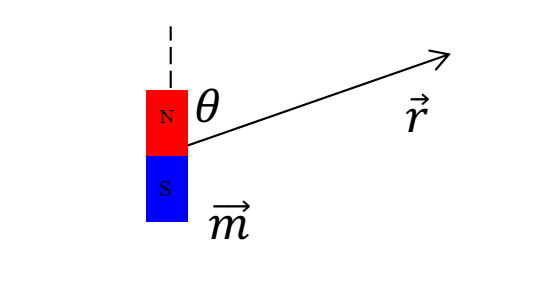
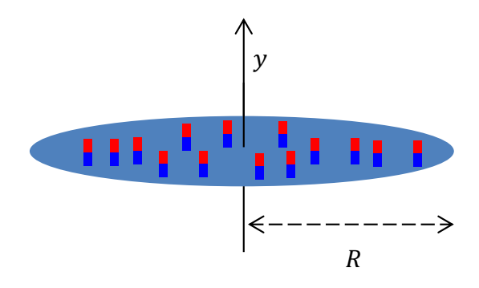
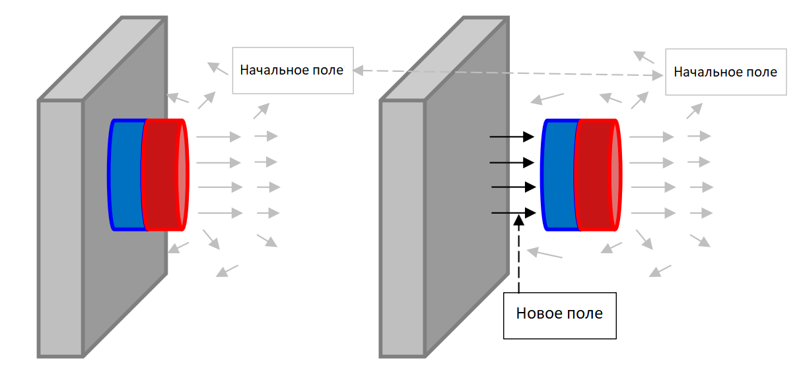
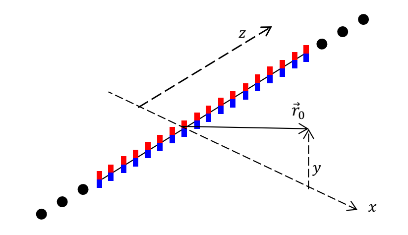
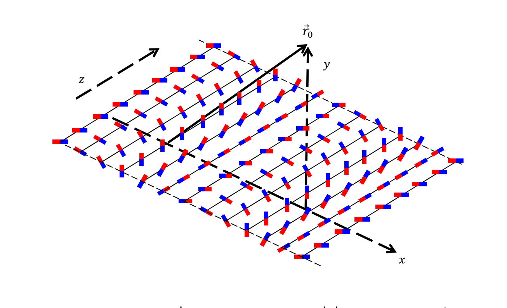
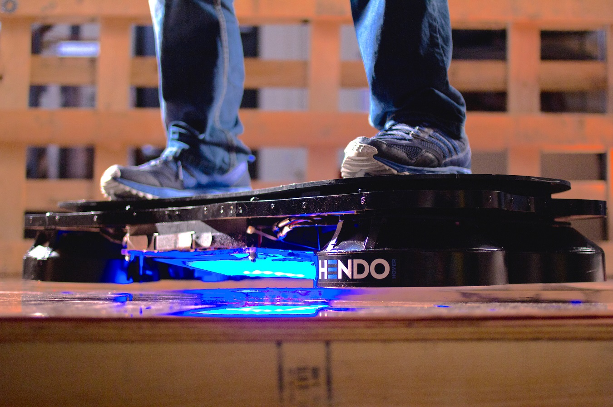

X20 (2020) — English translation
The Halbach magnetic assembly is a special configuration of permanent magnets, characterized by the fact that the magnetic field on one of its sides is almost completely absent due to the special arrangement of the assembly elements. In this problem we explore this phenomenon.
A dipole is a point magnetic element (for example, a small loop with current. Its dipole moment is $I\vec S$, where $I$ is the current running through the loop, and $\vec S$ is the oriented area). The field created by a magnetic dipole is described by the following formula: $$\vec B (\vec r) = \frac {\mu_0}{4\pi} \left(\frac{3\vec r (\vec m \cdot \vec r )} {r^5} - \frac { \vec m} {r^3}\right), $$ где $m$ — дипольный момент, $\vec r$ — радиус-вектор точки в пространстве относительно диполя. $\mu_0=4\pi\cdot 10^{-7}~\text{H/m}$. The figure shows a dipole, a vector and the angle between them.

Let us consider a light magnet, which is a flat cylinder of radius $R$ and thickness $h \ll R$ with a surface magnetic moment density $\vec\sigma$. The surface density vector is oriented along the disk axis.

If you bring a small round magnet close to a metal refrigerator door, the magnet will be attracted to it with a force that depends on the size and type of material of the magnet, as well as the thickness of the door. At this point, consider the thickness of the door to be much larger than the linear dimensions of the magnet. Consider a cylindrical magnet with a volumetric dipole moment density $\rho = 1.05 \cdot 10^6 \frac {\text{ Тл} \cdot \text{м}}{\text{Гн}}$ of thickness $t=2~\text{мм}$ and diameter $D=20~\text{мм}$.

To determine the force of interaction between the magnet and the refrigerator door, it is necessary to use the law of conservation of energy. When a magnet is pulled away from a door, a field is created between them that is approximately equal to the field on the other side of the magnet. The rest of the field (including what's inside the door) remains almost unchanged. The expression for the volumetric magnetic field energy density in air is: $w=\frac{B^2}{2\mu_0}$.
In order to obtain the expression of the magnetic field in the Halbach assembly, we find the field of a long row of magnets, as shown in the figure. Linear density of the dipole moment of the series $\rho_L$, direction - along the axis $y$.

In a planar Halbach magnetic assembly, the polarization direction of a small area element rotates continuously. Its position changes in accordance with the formula: $$\beta(x,z)=\beta_0+k\cdot x,~k=2\pi/\lambda,~ t\ll\lambda$$ Здесь $\beta$ — это угол между направлением диполя и перпендикуляром к плоскости, этот угол вращается в плоскости $xy$. Длина $\lambda$ — это шаг сборки, а $t$ - thickness of the assembly.

One of these integrals is needed to solve this point: $$ \int_{-\pi/2}^{\pi/2} dx\cdot\cos(2x)\cdot\cos(c\cdot\tan x)=\frac{c \cdot \pi} {e^c}=\int^{\pi/2}_{-\pi/2}dx\cdot\sin(2x)\cdot\sin(c\cdot\tan x) $$ $$ \frac{\pi}{e^d} = \int_{-\infty}^{\infty} dx\cdot\frac{\cos x}{d^2+x^2} $$ $$ \frac{\pi}{a\cdot e^a}= \int^{\infty}_{-\infty} dx\cdot \frac {2x\cdot\sin(2x)} {(a^2+x^2)^2} $$ $$ \frac {(b+1)\pi}{e^b}= \int^{\infty}_{-\infty}dx \cdot \frac{2b^3x\cdot \cos(x)}{(b^2+x^2)^2} $$
You might think that nothing more innovative than refrigerator magnets would use Halbach assembly. However, the Hendo company has developed an entire hoverboard based on it (the same one that was in the movie “Back to the Future”). Using Halbach's ring assembly of electromagnets, Hendo achieved enough lift to lift an average-sized person off the ground! But only over copper.

Source: https://pho.rs/p/19